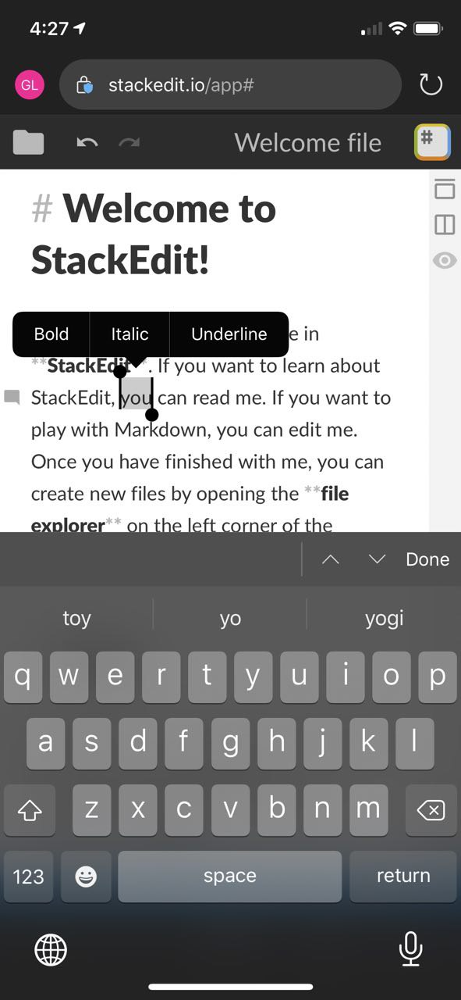

Abstract
This specification defines a mechanism to supp ress editing-related, user-agent-supplied user interface elements, using well-known names of editing commands, types of input not compatible with their editor.
This specification purposefully does not prescribe the means by which a user agent will indicate to the user that some commands are not applicable in a given editable region. The user agent is free to disable or remove the UI or do something else of their choosing.
Rename this file to something that best reflects the purpose of this API. Was contenteditable-disabled. Before rethinking its purpose to focus solely on formatting commands I renamed edit UI directives. Now thinking something that means unsupported formats. It is only applicable to contenteditable. Maybe it should go back to being contenteditable-disabled?
fontSize / insertImage is missing from beforeInput. Why? Discuss? File issue?
Review the need for a JS API that manipulates these as a DOM token list.
Introduction
Modern rich text editors on the web seek to build unique edit functionality. A combination of general purpose as well as highly customized markdown editors creates a need in building custom editing experiences.
This oftentimes, results in the need to disable some or all user agent (UA) provided edit functionality.
In editable regions of documents, some user agents provide contextual user interface (UI) elements to help
accelerate common editing operations. The UI is meant to enhance the editing experience, but when authors
create customized editors that aren’t compatible with user agent UI, it leads to confused users.
One such example is stackedit - online markdown editor. It does not any of the editing UI provide by UA because it makes no sense in the context of markdown experience.
In this undesirable scenario, users end up seeing something like below - an UI that does not do anything:

To avoid user confusion and improve overall editing experiences, UAs need to expose ability to control its UI to web developers.
contenteditable-disabled attribute.
This specification defines a new an enumerated attribute contenteditable-disabled. It allows the disabling of certain editing UI on contenteditable host by supplying a well-known list of input types.
Supported UI Commands
Only commands that perform some rich formatting of the content that may not be applicable to all editors have been included in the list.
Recommended Commands
- formatjustifycenter
- formatjustifyfull
- formatjustifyleft
- formatjustifyright
- formatbackcolor
- formatbold
- insertlink
- formatfontName
- formatfontSize
- formatfontColor
- formatindent
- inserthorizontalrule
- insertorderedlist
- insertunorderedlist
- formatitalic
- formatoutdent
- formatremove
- formatstrikethrough
- formatsubscript
- formatsuperscript
- formatunderline
Some commands such as font formatting related commands would normally be disabled together. As such, shortcuts can be used to disable classes of commands
- formatjustify
- formatfont
- formatdent
- insertlist
- formatscript
Please note that this specification does not intend to add all attribute value for disabling of all UI commands as this is possible to achieve today with contenteditable="plaintext-only".
IDL
[Exposed=Window]
interface ElementContentEditableDisabled {
attribute DOMString contentEditableDisabled;
};
The contenteditable-disabled content attribute is an enumerated attribute whose keywords are at least one of the commands from the Supported UI Commands list in section 2.1.
Need to discuss possible states for attribute values.
Should we allow an empty string to be passed in as a value? What should happen then?
Conforming Implementations
A user agent conforming with this specification MUST make all visible user interface elements that would
trigger an incompatible editing command non-actionable. Including, but not limited to, context menu entries, virtual
keyboard buttons, and floating toolbar UI.
Triggering an incompatible editing command from a non-visible user interface element MUST NOT be disabled,
so long as the command correlates with a cancellable event that the author can use to prevent unwanted
manipulation of the DOM by the command. The canonical example of non-visible UI is a keyboard shortcut.